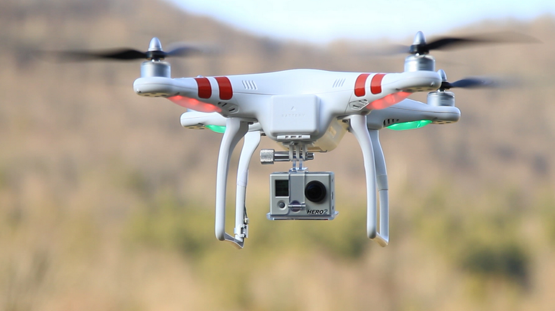

However because they can reach the places humans cannot, they are a sensitive topic as they could easily invade someone’s privacy by simply flying over their house. However, in order to prevent such cases there are several laws which help to protect the community ethics.
When operating a drone, one must make sure that the aerial vehicle or aircraft does not endanger anyone or anything. You must keep your aircraft within your visual line of sight, which means that it should be no more than 400 feet above you and 500 meters ahead of you. While using the drone for surveillance purposes the restrictions are a lot stricter, there is specific distance that the drone is required to keep between it and people or any private properties. You are however allowed to fly a drone in public areas like park as long as it’s kept 150 meters above the area. (Smashing Drones, 2017)
